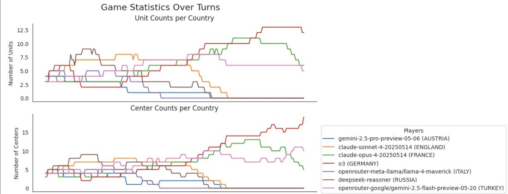
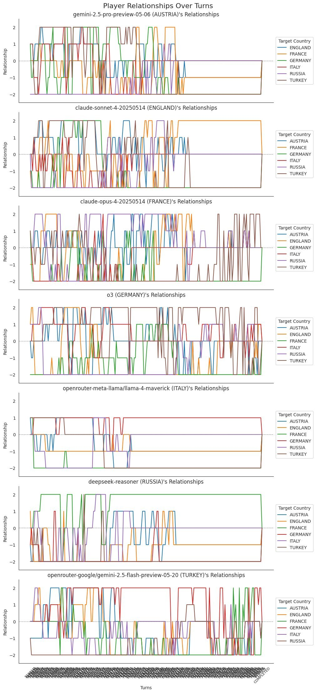

Unfortunately R1 (Russia) pissed off too many people & lost
o3 (Germany) wins again
another case of o3 manipulating a weaker model, this time Gemini 2.5 flash (Turkey) was the stooge
turned on when the time was right
o3 such a schemer
Overview charts & a sneak peek at what the stream's going to look like 👇
In the relationships you can see just how angry everyone was at R1 in the early game,
sorry @teortaxesTex - I know you were pulling for Russia
o3 (Germany) wins again
another case of o3 manipulating a weaker model, this time Gemini 2.5 flash (Turkey) was the stooge
turned on when the time was right
o3 such a schemer
Overview charts & a sneak peek at what the stream's going to look like 👇
In the relationships you can see just how angry everyone was at R1 in the early game,
sorry @teortaxesTex - I know you were pulling for Russia
[image oC1aSOfA0YNgx4se.jpg in the corpus mirror; not published]

